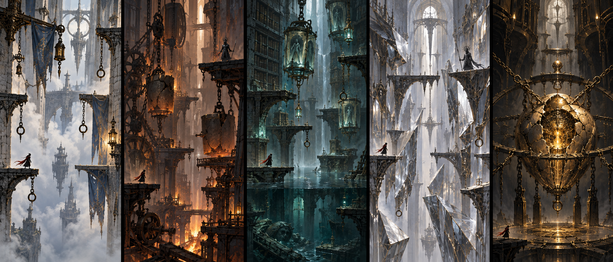

读懂钟城，改变归路。
30个词分布于战斗、机关、路线与残响。主线保持动作节奏，探索给出完整词组的运用机会；同一个词换一种情境回来，留下可以看见的变化。

概念美术，非实机截图。场景空间、材质和光线各有职责；不使用课堂卡片或儿童化奖励。
所有词节点都需要玩家主动参与。跳过支线、题目预算未开放或没有合适复核词时，保留完整动作通路；不排队补弹题，不以30/30锁出口。
一个词，两种具体情境
这是来自现有词库的样例组。正式远征先随机抽30词，再匹配已审校模板。复遇库不等于一局必须完成60次请求。
| 词与义项 | 首次运用 | 不同情境 |
|---|